22.07.01
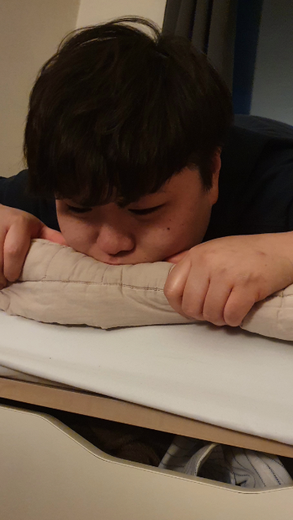7월의 첫 날은 귀염둥이로 시작😊
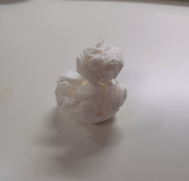눈이 보고 싶어서 휴지로 눈사람을 만드는 닝우
22.07.02
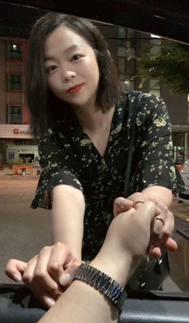웬일인지 김다시는 오늘따라 예쁘게 하고 닝우 퇴근을 맞이했다
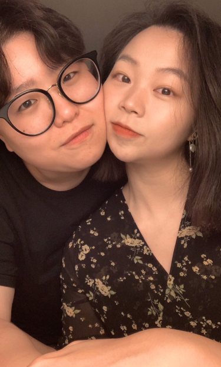순진한 곰 vs 노는 여우 느낌이다
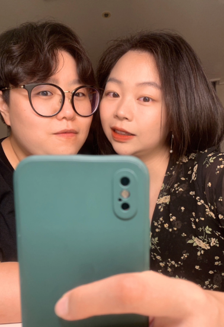우리 어떻게 찍어도 잘 어울려요
22.07.03
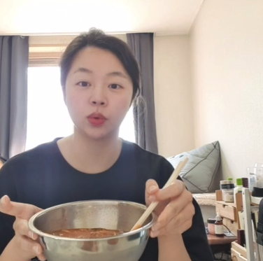물냉면을 먹는 모습을 찍어서 보내주었다
닝우는 내가 밥을 먹는 게 왜 좋을까?
공부하던 김다시에게 문신을 남겨주는 닝우
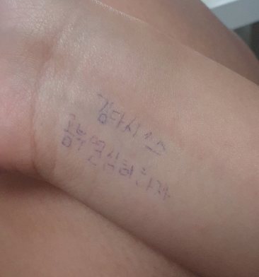문신도 어쩜 사랑스럽다
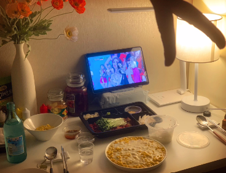육회와 콘치즈를 먹으며 미스트롯을 봤다
즐겁고 평화로운 일상 속에 우리가 함께 있어서 좋다
22.07.04
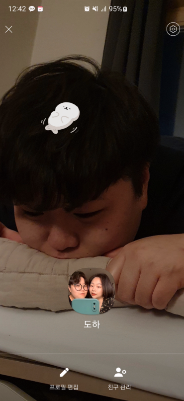귀여운 닝닝이가 너무나도 귀여워서 카톡 프사를 했다
프사에 물개를 추가하니 더 귀여워진 닝닝이
으아 아가 같아... 귀여워...
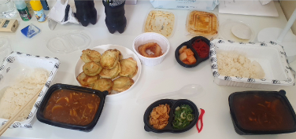처음으로 카레를 시켜먹었다! 나는 하이라이스를 먹었다
22.07.05
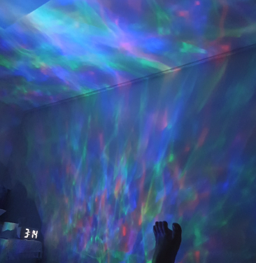자기가 퇴근할 시간에 맞춰 바다를 선물해주었다
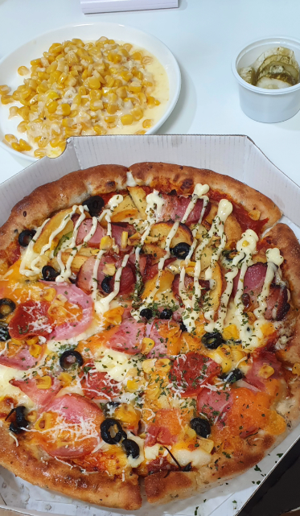피자보감님은 언제 먹어도 너무나도 맛있다
하프로 먹던 풀로 먹던 꼭 베이컨 감자가 있어야 한다
빵을 먹고 있는 닝우
맛이 없다고 한다
22.07.06
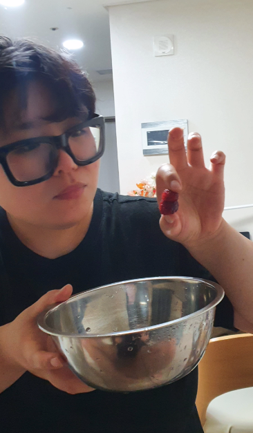산딸기를 씻어서 먹었다!
산딸기를 겹쳐서 눈사람을 만드는 닝우다
겨울이 어지간히 그리운가보다🥲
22.07.07
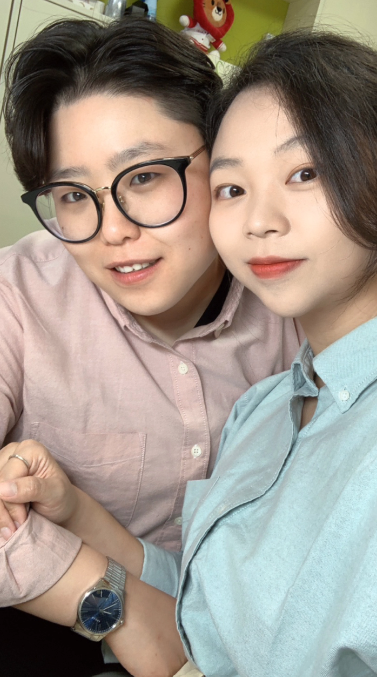출발하기 전 닝우가 사온 커플 셔츠를 입었다!
나는 파란색, 닝우는 분홍색
우리 잘 어울려요
섹시한 여우 vs 바보 멍청이 곰
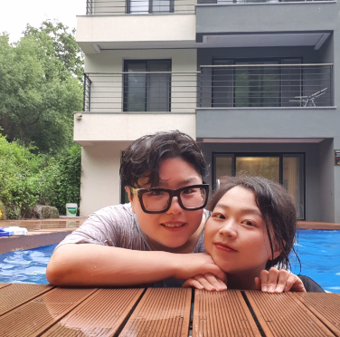우리는 수영장이 있는 펜션에 물놀이를 갔다!
동영상을 찍으며 수영장에서 신나게 놀고 방으로 갔다
보통 수영장이 있는 곳으로 놀러가면 수영장이 더 많이 생각나는데
이때 갔던 여행은 숙소에서의 일이 더 기억난다 왜일까?😶🌫️
22.07.08
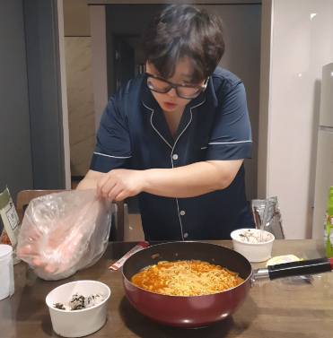맛있는 라면과 주먹밥을 만드는 닝우
숙소에 있는 작은 창문으로 비치는 닝우의 모습이 좋았다
닝우가 만들어 준 주먹밥은 최고로 맛있었다😋
그리고 나서 우리는 이상한 영상을 보고🫣
우리 노래가 하나 더 생기게 되었다😊
정말 맛있는 칼제비를 먹었다
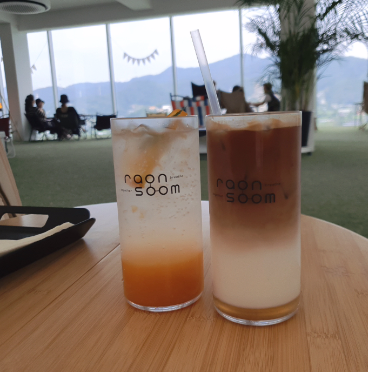아주 커다란 카페도 갔다!
큰 유리창이 멋있었다 카페가 아니라 내 집이었으면 좋겠다
나에게 도넛츠와 꽈배기를 잔뜩 먹인 닝우
22.07.09
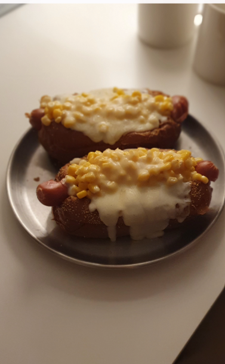집에 남아있는 브라운 브레드로 자기가 콘치즈빵을 만들어줬다
22.07.10
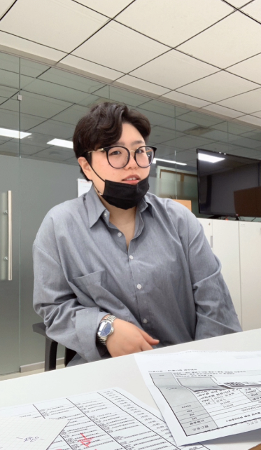언니... 누가 회사에서 그렇게 섹시하게 있으래?😠
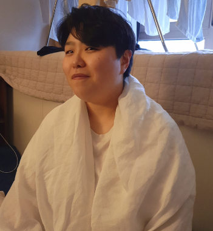하얀 보자기를 두른 아가 너무나 귀엽다
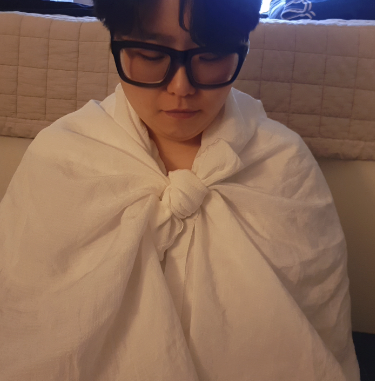저걸 입고 걸어가는 연습을 해보는 아가는 더 귀엽다
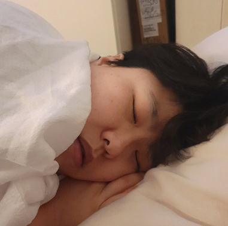그러다가 졸려서 잠든 아가는 너무너무너무 귀엽다!
22.07.11
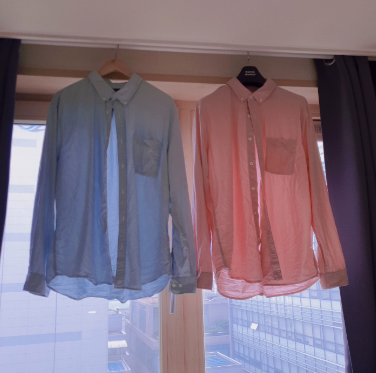손 잡고 있는 사이 좋은 셔츠들
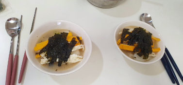떡국은 우리의 소울 푸드가 되었다😊
22.07.12
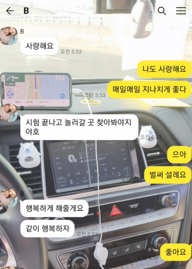행복을 말하는 우리
22.07.15
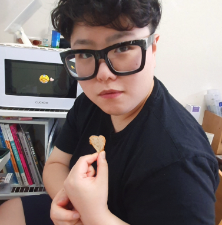하트모양 마늘빵으로 심장을 보여주는 언니
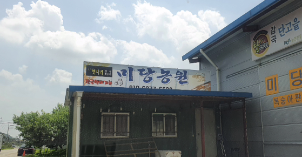여기는... 미당농원이요...?
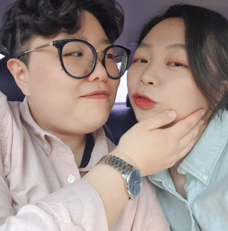그렇다 김다시가 며칠 째 미당농원 복켓팅을 하는 걸 본 언니는
내가 번번히 실패하자 나를 데리고 미당농원에 온 것이다...
칼질도 잘해서 섹시한 언니 고마워😊
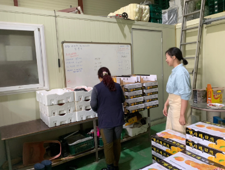꼭 복숭아집에 시집 온 새색시 같다
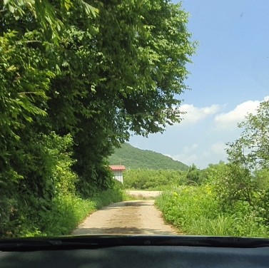음성집과 가까워 잠시 들렸다 날씨가 좋아 세상이 푸릇푸릇했다
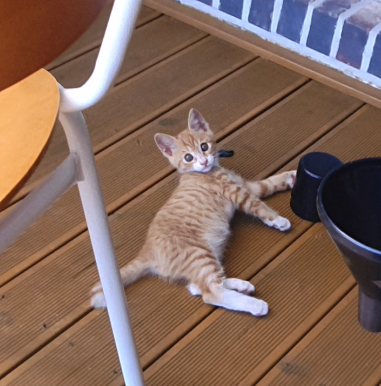야옹이도 안녕!
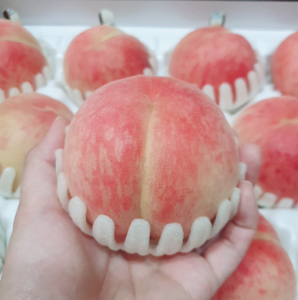너무나도 맛있어 보이지만 먹기 아까운 복숭아였다...
그치만 맛있게 다 먹었다 고마워요🥰
집에 돌아와서는 둘리 얼음별대모험을 봤다!
언니는 둘리를 좋아한다
김다시는 언니가 출근 후 전업 주부의 일을 했다
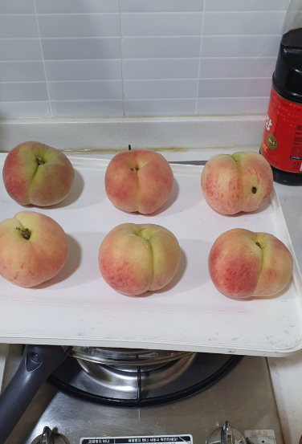전업 주부의 복숭아 익히기도 했다!
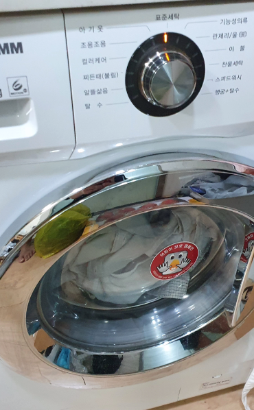전업 주부의 빨래돌리기를 하고 자랑했다
칭찬 받을라구
22.07.16
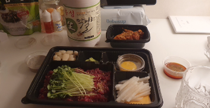우린 한 달마다 자주 먹는 음식이 바뀐다
이때는 육회에 빠져있었다
22.07.17
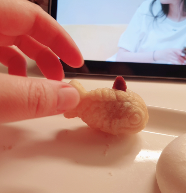잔악무도하게 붕어빵을 잡아먹는 닝우
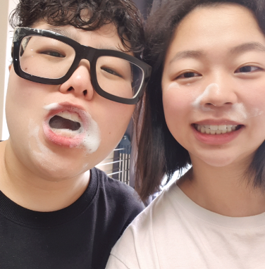서로 양치 거품을 묻히고 좋아하는 우리 신혼 같다
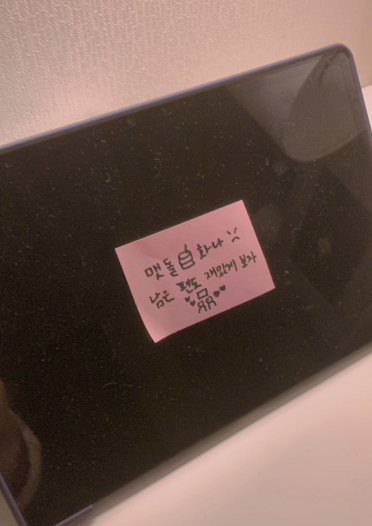돌아온 김다시의 포스트잇!
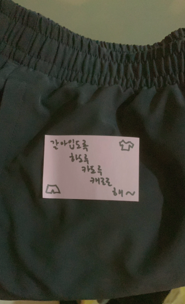케로로 케로로 해~
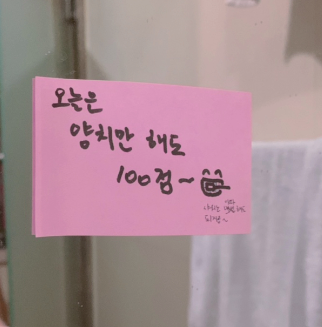양치만 하면 100점을 준다!
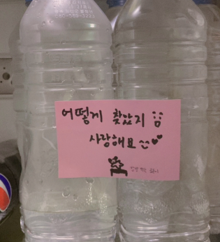난 이 포스트잇이 제일 좋더라
22.07.18
봐봐 우리 육회에 빠져있는 거 맞다니까?
22.07.19
왜인지 모르게 예쁜척하는 김다시
22.07.20
너무나도 맛있는 너무나도 복숭아였다...
김밥 볶음밥을 완성하고는 바로 와서 떠먹여주는 닝우
그런데 저 볶음밥 진짜진짜 맛있었다
너무나도 숭아를 올린 너무나도 요거트
22.07.21
뭔가를 또 잔뜩 먹인 닝우와 그걸 먹고 있는 나
짜장면이다! 이 계란후라이를 올린 짜장면이 강동구에서 제일 맛있다
뭐지 자고 있는 조각상인가?
22.07.22
닝우와 역전 할머니맥주에 왔다!
저 살얼음 맥주를 나에게 먹여주려고 간 거였는데
정말이지 시원하고 맛있었다!
짜파구리인지 짜파떡볶이인지 짜파라볶이인지도 먹었다
맛있는 저녁이었다😋
22.07.23
닝닝이가 나를 간신히 깨워주었고
나는 고맙다고 저렇게 치다가 잠들었다
왜 일찍 일어났냐면 내일이 시험날이기 때문이다!
자기가 맛있는 저녁을 차려주어서 감동이었다
다정한 마음을 가진 자기야 고마워요
22.07.24
시험장에 도착해 나를 찍어 보내주었다
오는 길에 우리 노래를 들은 것도 보여주었다
한참 정신없이 시험을 치고 점심을 먹으려구 했다
그런데 닝우가 시험장 앞에 왔다!
내게 신경써주는 마음이 너무 고마웠다
닝우는 내게 쿨라임피지오와 샐러드를 주었다
얼레벌레 시험을 보고 돌아와서 닝우와 치킨을 먹었다
고마운 마음이 가득한 하루였다
22.07.25
이놈들 또 짜장면 먹는다
22.07.27
또 짜장면 먹는다! 7월은 짜장면의 달이었다
이때까지는 내가 육돈식당이 더 맛있다고 주장했다
하지만 다시 방문하고 나서는 숙성명가파로 변절하여서
그 뒤로 숙성명가만 가게 되었다
22.07.28
피자보감님을 먹으며 지락실을 보며 한가한 시간을 보내고 있다
닝우를 위한 선물 도착!... 이었지만
실물이 너무나도 고무신인 아디다스 슬리퍼였기 때문에
없던 일로 하였다
22.07.29
한 달에 한 번은 먹는 것 같은 오뎅탕
시험이 끝나서 오랜만에 본가를 갔다
아이스크림을 먹는 모습을 닝우에게 보내주며 7월이 끝났다